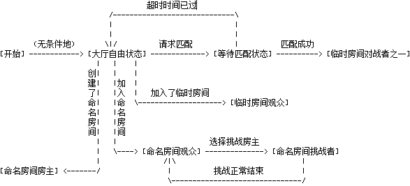

协议版本: wuziqi-1.0.0.0
通讯过程由服务端与客户端的消息报文请求与响应组成；消息报文与消息报文之间以消息分界符分开；消息报文与消息报文分界符统一以UTF-8编码。关于为什么选择UTF-8编码，请参考UTF-8 Everywhere Manifesto
<message> ::= [':' <prefix> <SPACE> ] <command> <params> <crlf><prefix> ::= <guest> | <user><command> ::= <letter> { <letter> } | <number> <number> <number><SPACE> ::= ' ' { ' ' }<params> ::= <SPACE> [ ':' <trailing> | <middle> <params> ]<middle> ::= <Any *non-empty* sequence of octets not including SPACE or NUL or CR or LF, the first of which may not be ':'><trailing> ::= <Any, possibly *empty*, sequence of octets not including NUL or CR or LF><crlf> ::= CR LF服务端与客户端建立连接后，首先应该进行协议版本协商。这是因为后续协议可能会随着新功能的加入而不再兼容旧版本协议。当然这是最坏的情况，理想情况是使用着旧版本协议的客户端对服务端的新版本协议请求进行忽略，而不影响旧有的功能。想要使用最新功能只需升级客户端。
所以服务端应该询问客户端的版本或者客户端主动报上自身协议版本请求验证，按照兼容规则判断出客户端的协议版本是否兼容当前服务端的版本并将结果返回客户端。
如果协议不兼容，连接则可以断开了。客户端应主动提醒用户，给出最新版本下载链接地址，甚至能自动升级。
本协议采用客户端主动请求协议兼容性校验，请求命令与应答命令如下：
| 请求/应答 | command | params | params说明 | 实例 |
|---|---|---|---|---|
| 请求 | verify |
协议名加版本号 | 协议名固定为"wuziqi", 版本号由四个非负整数构成并以小数点隔开，协议名与版本号之间以减号分隔开来 | verify wuziqi-1.0.0.0 |
| 应答 | verify |
验证结果 | 验证结果有两种：1. "yes"；2. "no"； | verify yes |
用户帐户由一个独一无二的数字ID标志，其他的有关该用户的信息可由此ID查询得到，比如昵称、邮箱、好友、游戏排名、胜负数、逃跑局数等。除去注册用户的认证，还有游客（Guest）模式。游客模式有极大的限制，比如只允许观战、不能自定义昵称等等。加上限制的原因是为了鼓励用户注册帐户，享受更好的VIP服务 :) 。
游客的标志是"g"后面跟一个随机分配的整数。不一定前后两个Guest用户的整数恰好相差1，因为游客有进有出，会有空位留下来。理论上，服务器刚启动时，Guest列表为空，第一个游客用户分配的整数恰好为0.
本协议采用客户端主动请求用户认证，注册用户和游客用户的请求应答命令如下。
| 请求/应答 | command | params | params说明 | 实例 |
|---|---|---|---|---|
| 请求 | login |
登录类型加对应所需参数 | 此处登录类型为"user", 需要的额外参数有 <ID> 和 <hashed password>。服务器数据库不存储明文密码，只存储了密码的UTF-8编码的SHA1啥希值，以16进制表达的40位整数。不使用明文密码的教训来自CSDN密码泄露事件。 | login user 10000 5baa61e4c9b93f3f0682250b6cf8331b7ee68fd8 |
| 应答 | login |
验证结果 | 验证结果有两种：1. "yes", 同时服务器广播该登录的消息给全体已登录且在线的客户端；2. "no", 不会广播此消息。 | :10000 login yes |
| 请求/应答 | command | params | params说明 | 实例 |
|---|---|---|---|---|
| 请求 | login |
登录类型 | 此处登录类型为"guest"。 | login guest |
| 应答 | login |
验证结果 | 验证结果有两种：1. "yes", 同时服务器广播该登录的消息给全体已登录且在线的客户端；2. "no", 不会广播此消息。 | :g0 login yes |
对于命名包间，刚创建完成后，房主占据对战双方中的一个名额。随着其他用户的进入观众席，其中的注册用户可以选择上场进入对战位置准备与房主对战，也可以选择继续当观众。对战开局前，所有玩家可以自由进出与聊天。对战开始后，观众可以随意离席或者回来。对战过程中，如果挑战者中途离开，那么对战结束；如果房主离开，那么对战结束，并且房间服务器回收，房间内所有玩家被请到大厅处。如果对战是正常决出胜负平，那么挑战者会被请回观众席，所有观众可以选择上场或不上场。
注册用户需要主动发出等待匹配的请求（只有处于大厅状态的用户允许发出此请求）后，将会处于长达1分钟的等待匹配状态，该状态下将只能待在大厅内，不可以去包间。一分钟过后，恢复自由状态。这样做的目的是为了防止打扰到只想聊个天或者观看精彩对战的玩家。
一般来说，玩家同一时刻只能处于一个房间，比如初始的大厅，房主创建的命名房间以及随机匹配而由系统创建的临时房间。玩家在不同的房间里还具有不同的状态（角色）。例如在大厅里可以有等待匹配状态与自由状态；在命名房间里的房主、挑战者、观众；在临时房间里的对战双方、观众。
各状态的迁移图如下所示，结点间的连线上描述了迁移条件：

在线状态迁移图原始文本（请用汉字占英文两倍宽度的等宽字体查看）